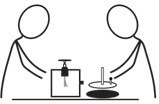

both the order and orientation of the letters are reversed. They are laterally inverted. The alphabets that will have the image appear the same as the alphabet when kept in front of a plane mirror are A, H, I, M, O, T, U, V, W, X, and Y. These letters are vertically symmetric. That means if we cut the letters in half, both halves will look similar. There won’t be any change in appearance when the letter is flipped sideways.
Lateral inversion is the phenomenon in which the image of the object turns 180° about the vertical axis, such that the right side of the object appears as the left side of the object and vice versa. For example, a card printed with word, REEL when viewed through the mirror the word would appear as ⅃ƎƎЯ.

Task 4.4
The following tasks should be done in pairs.
Rotating a mirror
If a mirror is rotated by a certain angle, what changes can occur to the reflected ray? You know that when light reflects off a plane mirror, the angle of incidence is equal to the angle of reflection. Now, if a specific angle turns the plane mirror, how will this affect the angle of reflection? To explore reflection of ray of light by rotating mirror, perform Activity 4.5.
